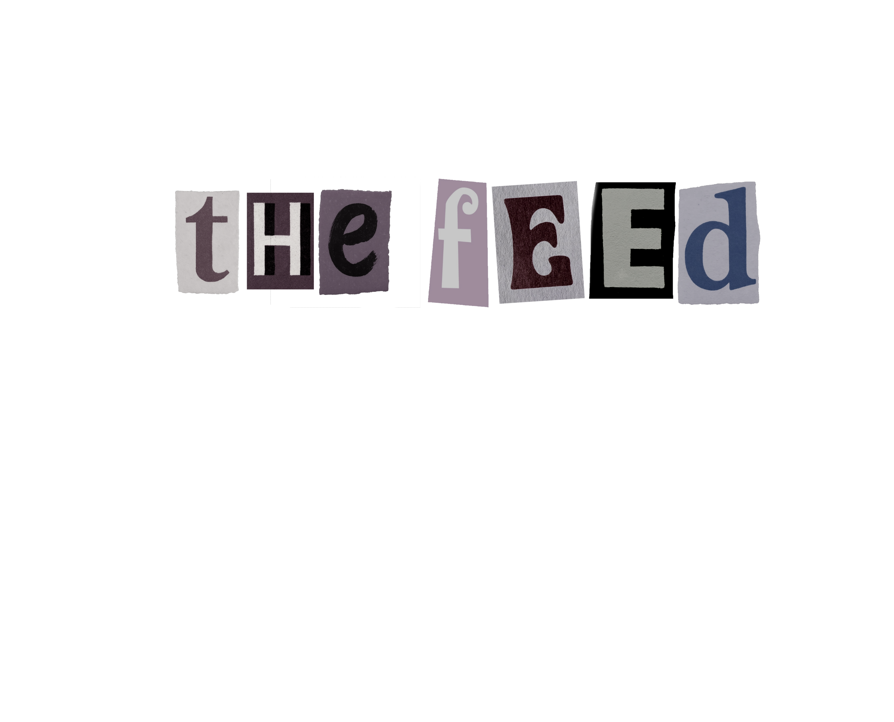
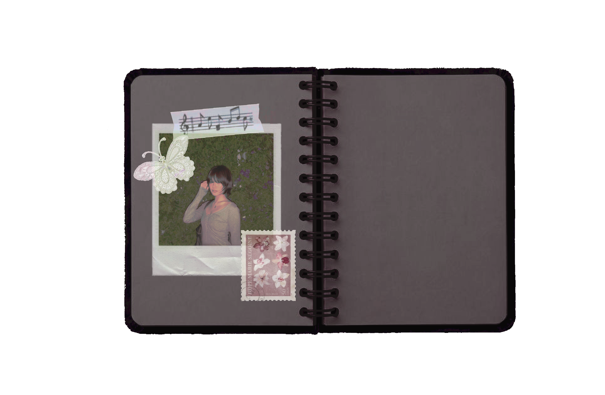
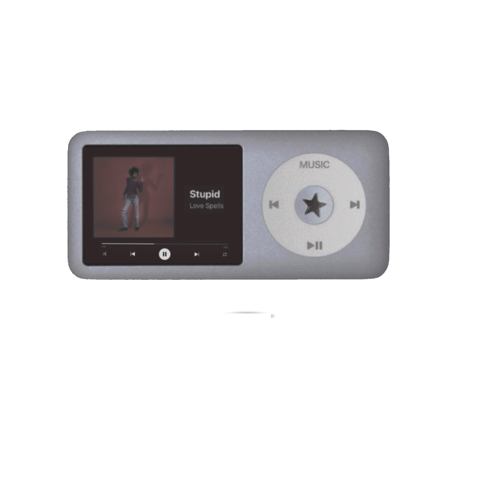
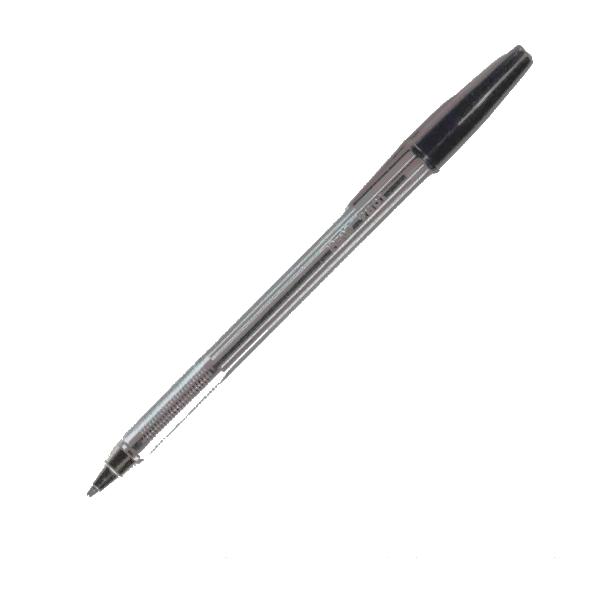
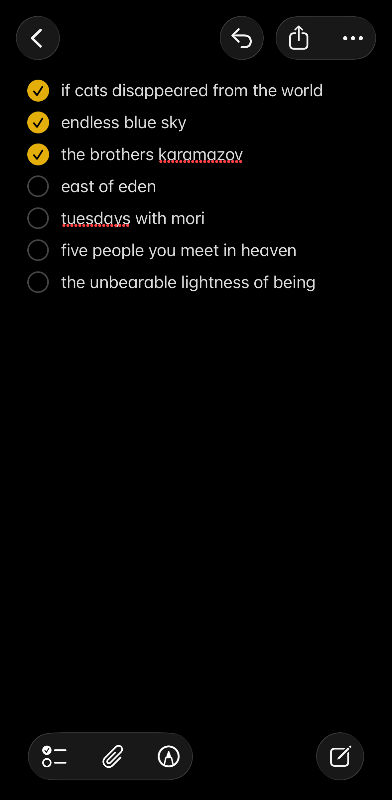
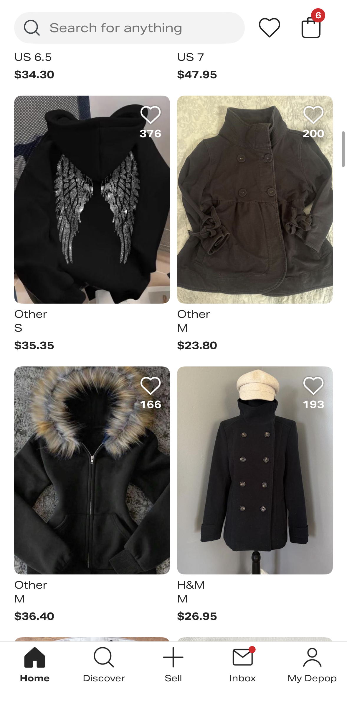

I recently got back into reading so I made a list of books I currently want to read and checked it off when I did.

I like browsing through Depop when I want to online shop but I’m not looking for anything specific. Most of the time I don’t get anything.
When I’m writing down notes I like to write them in Notability on my iPad. I’m currently studying some Korean in my free time.
I like to read manga while I’m on public transportation or when I’m bored. I’m currently reading Witch Hat Atelier after watching the anime.
I have multiple accounts on my Instagram. My main, spam, and my college church ministry that I help run. I like doomscrolling in my free time and uploading pictures on my spam.
I love scrolling through Pinterest for inspiration. I use it all the time for clothes, nails, art, design, hair, and tattoo references.
I made banana bread last weekend so I needed to search up a recipe. I can’t bake without one so I usually just Google a recipe when I want to bake something.
I’ve been going to more concerts recently so I use Ticketmaster to buy and save some of them. I get anxious that I’m going to miss the date so I check it frequently to make sure I don’t forget.
I’m really bad at making multiple playlists so I just keep one that I constantly remove and add songs that I currently like to. The album cover is my cat.
I’m really disorganized and never have a consistent sleep schedule so I always just make a new alarm when I need one instead of using old ones. I also never wake up to the first two alarms so it stacked up.
I like taking lots of photos when I do something or go somewhere. It’s nice looking back on the memories so I tend to do that a lot when I’m feeling sentimental.